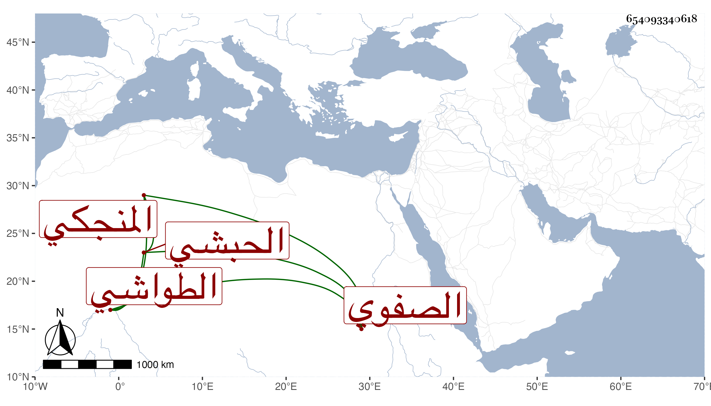

0902Sakhawi.DawLamic.ITO20230111-ara1.EIS1600.654093340618
Biography ID: 654093340618
331
جوهر المنجكي إبراهيم بن منجك صفي الدين الحبشي الطواشي ويقال له الصفوي . صار من جملة مقدمي الاطباق مدة حتى ولاه الظاهر جقمق نيابة تقدمة المماليك بعد فيروز الركني فحسنت حاله وعمر مدرسة برأس سويقة منعم عند عرصة القمح تجاه سبيل المؤمني ولم يتأنق فيها وعمل بها درسا في الفرائض قرر به أبا الجود المالكي وهو الآن مع عبد الرحيم المنشاوي وأول ما أقيمت الجمعة بها في رابع رمضان سنة أربع وأربعين وعزل عن النيابة بجوهر النوروزي حتى مات فجأة في مستهل ذي الحجة سنة احدى وخمسين ، ورأيت من أرخه سنة اثنتين وخمسين فالله أعلم ، وكان طارحا للتكلف رقيقا إلى الطول أقرب .
